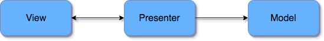

MVP架构指导性说明
有很多关于MVP架构的文章和例子，有很多不同的实现。开发人员社区一直在努力以最佳方式使这种模式适应Android。本文转自国外一篇文章，地址是https://medium.com/@cervonefrancesco/model-view-presenter-android-guidelines-94970b430ddf
如果决定采用MVP模式，你就是在做一个架构选择，同时你的代码库会改变，实现新功能的方式也会改变。也应该清楚我们不能不面对一些安卓通用的问题比如 activity 生命周期，而且你应该问一下你自己几个问题：
- 我们应不应该保存 presenter的状态？
- 要不要持久化 presenter？
- presenter 有没有生命周期？
本篇文章按以下顺序给出一个 指南 或 最佳实践 列表：
- 解决使用本模式最常见的问题（或者是我自己遇到过的）
- 最大化这种模式的优点。
分层简介

- Model： 管理数据 的接口。 Model 的责任包括：调用API，缓存数据，管理数据库等等。Model 也可以是一个与其他 Model 通信来完成 Model 功能的接口。例如，如果使用的是 Repository 模式 ，那么，Model 就是一个库；如果使用的是 Clean architecture，那么 Model 就是一个交互器。
- Presenter： model 与 view 中间人。所有的业务逻辑都在这个地方。 Presenter 的责任是：查询 model，更新 view ，响应用户的操作，更新 model。
- View：以 Presenter 决定的方式来展现数据。 view 可以以 Activity， Fragment， Android widget 或其他任何能做展示进度条，更新 TextView ，填充一个 RecyclerView 的东西。
下面是一些个人观点。
1. 沉默及被动的View
安卓有一个最大的问题就是其 views （ Activitys, Fragment， …）很难被测试，因为框架太复杂。为了解决这个问题，你应该实现 Passive View 模式。通过使用一个控制器，此模式的实现将视图的行为降低到绝对最小值，在我们的模式里，此控制器就是 Presenter。这个选择显著的提升了可测试性。
比如，你有一个用户名/密码表单，还有一个提交按钮，你不用在 View 里面去写验证有效性的逻辑，而在 Presenter 里面去写。 View 干的事情就收集用户名和密码，然后传递给 Presenter。
2. 使Presenter独立于框架
为了让前一个目的确实有效（提高可测试性），确认 Presenter 不依赖于安卓的类。只使用 Java 依赖的原因有两个：将 Presenter 从实现细节（安卓框架）抽象出来，因此可以为 Presenter 编写非指令化测试，可以在本地的 JVM 上快速的进行测试而不需要一个模拟器。
如果我需要一个 Context 怎么办？
那就尽量不要用它。如果你需要一个 Context 时，你应该问一下自己为什么你会需要它。例如，你可能会用这个上下文来访问 shared preferences 或资源。但是，你不应该在 Presenter 里干这个事情：你应该在 View 里面访问资源，在 Model 里访问 shared preferences。这只是两个简单的例子，但我可以打赌，大多数时候，这只是一个错误的责任问题。
顺便说一下，当你需要解耦一个对象时，依赖倒置原则 （dependency inversion principle ）在这种情况下会有很多帮助。
3. 写一个契约类来描述View与Presenter间的交互
当你要写一个新功能的时候，首先写一个契约类是个非常好的习惯。契约类描述了View 与 Presenter 间的通信，这可以帮助更好的设计交互问题。
Android Architecture谷歌的做法就非常的棒，一个契约类接口包含两个内部类：一个用来描述View， 一个用来描述 Presenter。
比如：
public interface SearchRepositoriesContract { |
从方法名称，我们就知道我们描述其应该干的事情。而且，View 变得非常的简单。
View 约束
之前说过， View 通过 Activity 或 Fragment 实现：Presenter 必须依赖于 View 接口，而不是直接依赖于 Activity：这样，就将 presenter 与 view 的实现解耦。这正好是 SOLID 原则里面的 D：依赖抽象，不依赖具体。
我们可以随意改变 View，而不需要去变更 Presenter 的代码。我们可以通过建立一个 mock view 来对 Presenter 做单元测试。
Presenter 约束
我们真的需要一个 Presenter 约束类么？
实际上不，但我会说 需要。关于这个话题，有两种不同的意见。
某些人认为，应该需要这个契约类。因为我们把 View 从 Presenter 解耦出来。
然而，某些开发者认为，你正在抽象一个本来就已经是抽象了的东西，你就不需要写一个接口。而且，你可能绝不会再写一个可选的 Presenter，所以这只是浪费时间和代码。
无论如何，有这么一个类可以帮助你写一个 mock Presenter，但如果你使用类似 Mockito 这样的工具的话你就不需要任何接口。
我个人来说，我因为两个原因，所以要写这个 Presneter 接口类：
- 我不是为 Presenter 写接口。我是用它来描述 View 与 Presenter 的交互。这会让事情变得更加清楚。
- 这并不怎么花时间
4. 定义命名约定以分离职责
Presenter 一般会有两类方法：
- Actions（如
load()）：描述 Presenter 做了什么。 - User events（如
queryChanged()）： 通过用户的行为触发的动作。
actions 越多，View 中的逻辑就越多。相反，用户事件表明他们会向 Presenter 决定该做什么。 举个实例，一个搜索应该只在用户输入了指定数量的字符后才会发生。在这种情况下，View 只需要调用 queryChanged(...) 方法，Presenter 会决定合适来启动搜索的逻辑。
然而，loadMore()方法，会当用户滑动到列表底部的时候被调用，然后 Presenter 会加载结果的另外一页。这个选择意味着，当用户滑动到底部时，View 知道一个新页必须被加载。为了反转这个逻辑，我会把这个方法命名为 onScrolledToEnd()。
当我们在说这个 契约设计 短语的时候，你必须决定 每个用户事件，其对应的动作是什么，这个逻辑归属于谁。
5. 不要在Presenter接口内写Activity-lifecycle-style回调
标题的意思是，Presenter 内不应该含有onCreate(...), onStart(), onResume() 这样的方法，这因为几个原因 ：
- 这样的话，Presenter 将会用 Activity 的生命周期相耦合。如果当我要用 Fragment 替换 Activity 的时候怎么办？我该什么时候调用
presenter.onCreate(state)？在 Fragment 的onCreate(...), onCreateView(...)or onViewCreated(...)中么？当我使用的是自定义的 View 时候呢？ - Presenter 不应该有这么复杂的生命周期。安卓主要组件是这样设计的，但不意味着你应该在任何地方都这样做。只要有机会简化，就尽量简化。
作为调用一个相似名字方法的替代，在 Activity 生命周期回调函数中，可以调用 Presenter 的动作。如，可以在 Activity.onCreate()结束的时候，调用 load() 。
6. Presenter 与 View 1 对 1 关联
没有View， Presenter 就没有意义。其与 View 共存亡撒。其同时只会管理一个 View。
可以在 Presenter 以几种方法操作对 View 的依赖。一种方式是在 Presenter 接口中提供类似 attach(View view) 和 detach(View view) 的方法，就和前面的例子一样。这种实现的问题是，View 是 nullable 的，我们必须在每当 Presenter 需要一个 View 的时候进行检查。这有点烦人。
我刚说，Presenter 与 View 一一对应。我们可以利用这点。 Presenter 可以利用 View 作为其构造器参数。顺便一提，你可能会需要一个方法来为某些事件订阅 Presenter。 所以，我建议使用 start() 这样的方法来运行 Presenter 的业务。
dettach() 是什么？
如果你有一个 start() 方法，那么你可能需要最少一个方法来释放依赖。我们把某些 让 Presenter 订阅某些事件的方法叫做 start()，释放依赖的这个方法我们就叫 stop()。
public interface BasePresenter<V> { |
public interface BasePresesnter { |
7. 不要在 Presenter 内保存状态
我说的是用一个 Bundle 。如果你想遵守第二条规则的话，就不要这样做。你不应该把数据序列化到 Bundle，因为 Presenter 将会与安卓的类相耦合。
我没有说 Presenter 是无状态的，因为这是说谎。就跟前面的例子一样， Presenter 最好会拥有 page number/offset 这两个值状态。
所以，你必须保持 Presenter，是不是？
8. 不要保持 Presenter
不需要这种解决方法，主要是因为我认为 Presenter 并不是我们应该持久化的东西，其不是一个数据类，确切的说。
某些建议提供了一个在配置改变期间使用保留的 Fragment 或 Loaders 来获取 Presenter 的方法。我认为这不是最好的解决方案。使用这个办法，Presenter 在方向改变的时候会存在，但是当安卓杀掉进程并重新创建 Activity 时，这个 Activity 将会和一个新的 Presenter 一起建立。因为这个原因，这个方法解决了一半的问题。
那怎么办？
9. 为Model提供缓存以恢复View状态
在我看来，解决“恢复状态”问题需要调整应用程序架构。这篇文章提出了一个符合这种想法的很好的解决方案。作者建议使用一个类似 Repository 的接口或者任何其他用来管理数据东西 来缓存 网络请求结果，其作用域与整个应用相关，而不是与Activity相关（所以其在方向改变的时候存活）。
这个接口是一个更智能的 Model。上面这个方法可能会提供最少一个 磁盘缓存策略 和一个可能的 内存缓存。因此，及时进程已经销毁，Presenter 可以使用磁盘上的数据来恢复 View 的状态。
View 只需要担心几个必要的请求参数来恢复状态就行了。例如，我们的例子中，我们只需要存储查询。
现在，我们有两个选择：
- 在 Model 层抽象这个行为，当 Presenter 调用 repository.get(param) 的时候，如果页面已经存在缓存中，直接返回，否则的话就调用 网络 API。
- 在 Presenter 层管理。给 Presenter 在契约类中添加一个方法来恢复 View 状态。如
restore(params), loadFromCache(params) or reload(params)。
原文作者: Gowa2017 Zhang
原文链接: https://gowa2017.github.io/Android/MVP架构指导性说明.html
版权声明: 转载请注明出处(必须保留作者署名及链接)